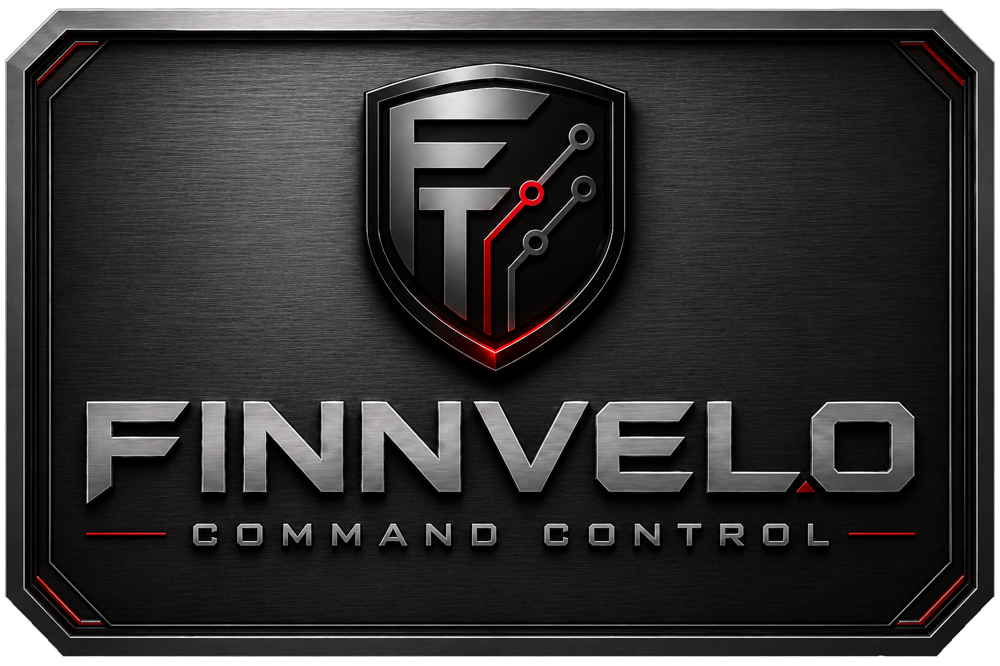
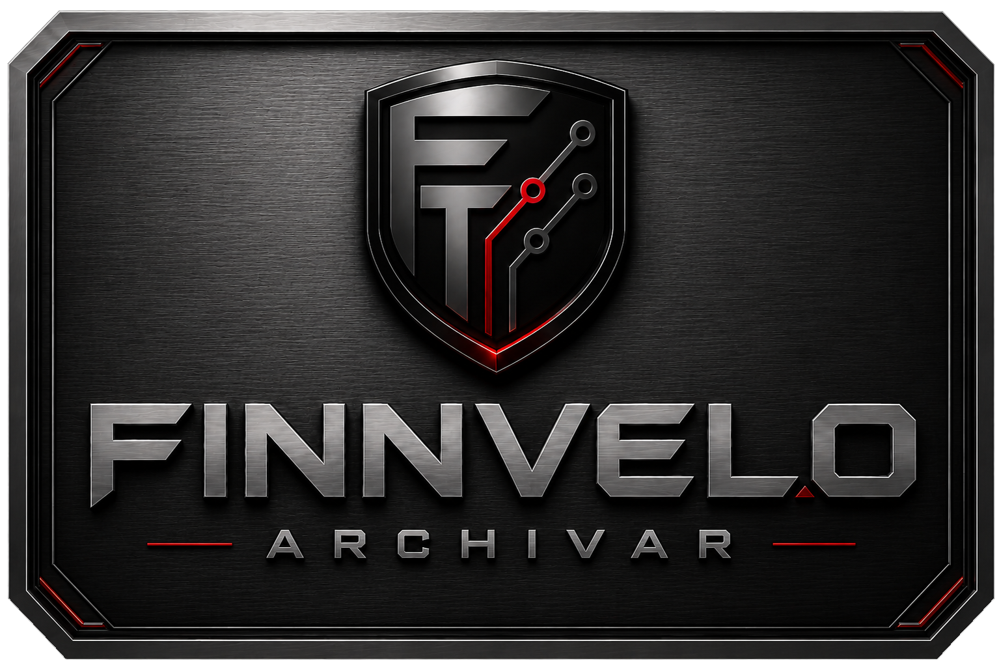
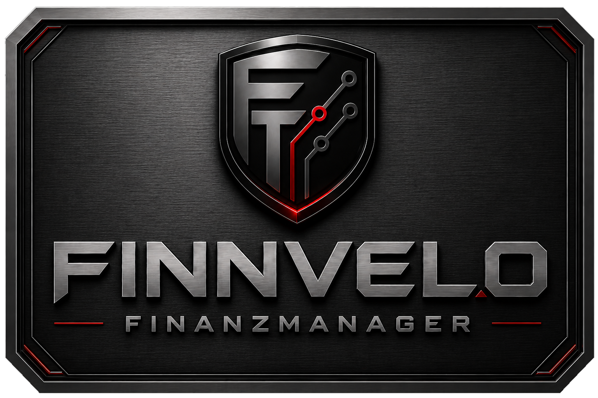
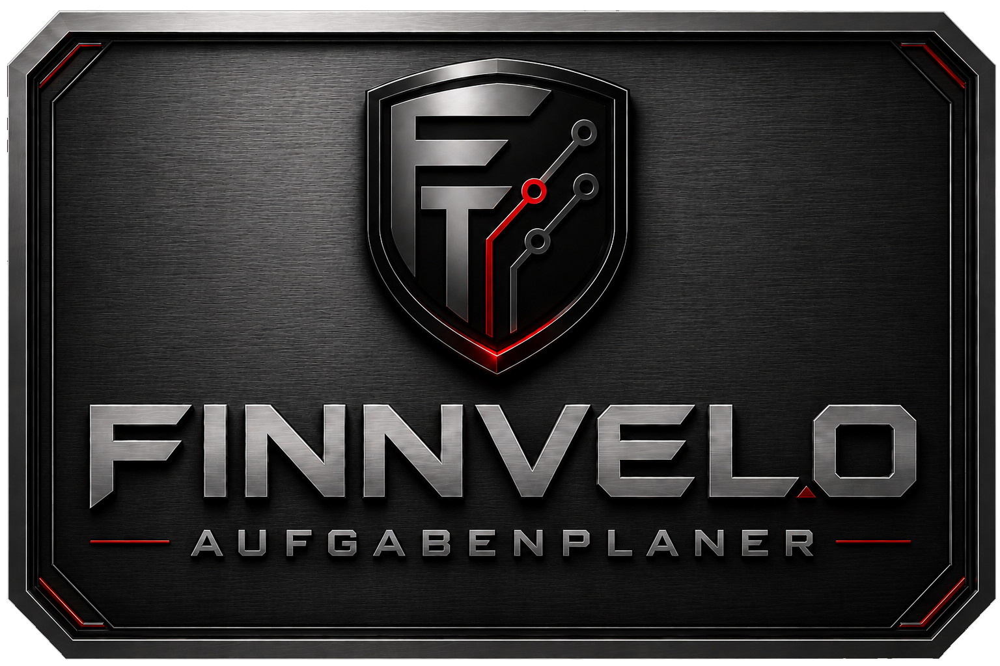
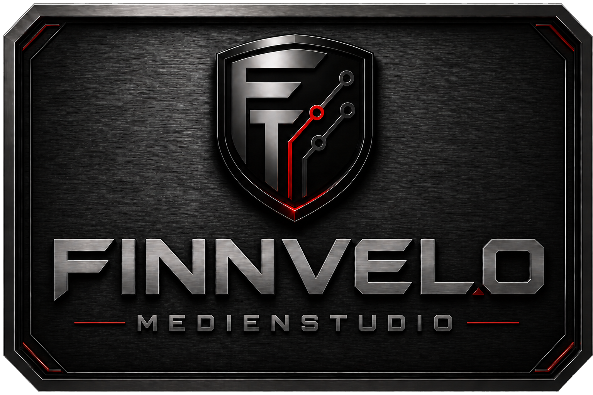

Software · Automatisierung · Produktivität
Finnvelo
Programmwelten.
Programmübersicht
Wähle ein Programm aus. Jede Programmfläche führt direkt zur eigenen Programmseite mit Beschreibung und späterem Downloadbereich.

In Testphase Finnvelo Command Control Zentrale Programmsteuerung für Programme, Shortcuts, Arbeitsbereiche und wiederkehrende Abläufe.
Download Finnvelo Archivar Archivierungsprogramm für Dateien, Ordner, ZIP-Archive und strukturierte Ablage.
In Entwicklung Finnvelo Finanzmanager Haushaltsbuch und Finanzübersicht für Einnahmen, Ausgaben, Kategorien und Planung.
In Entwicklung Finnvelo Aufgabenplaner Kleiner Tagesmanager für Aufgaben, Prioritäten und produktive Arbeitsorganisation.
In Entwicklung Finnvelo Medienstudio Kamera-, Bild- und Videobearbeitungsbereich für spätere Medienwerkzeuge.